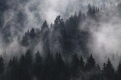
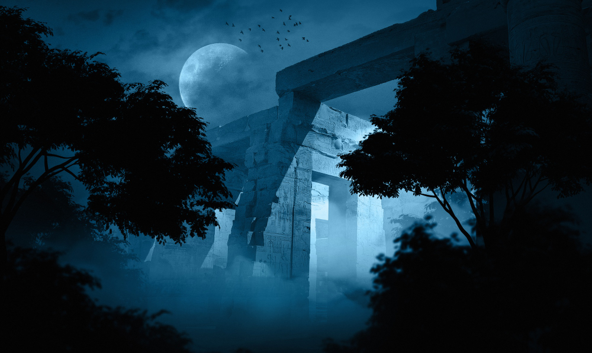
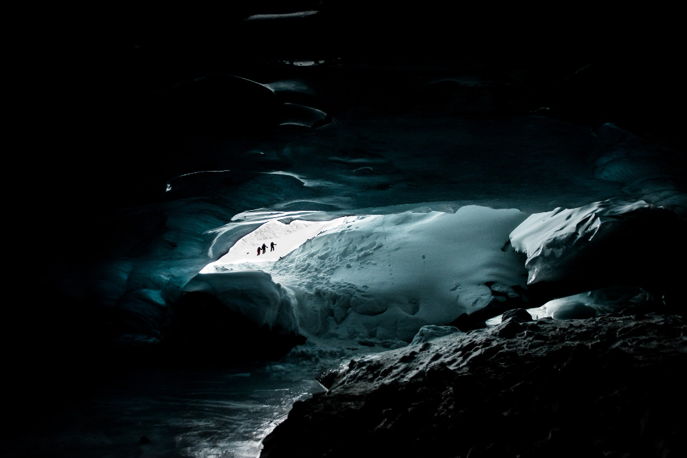
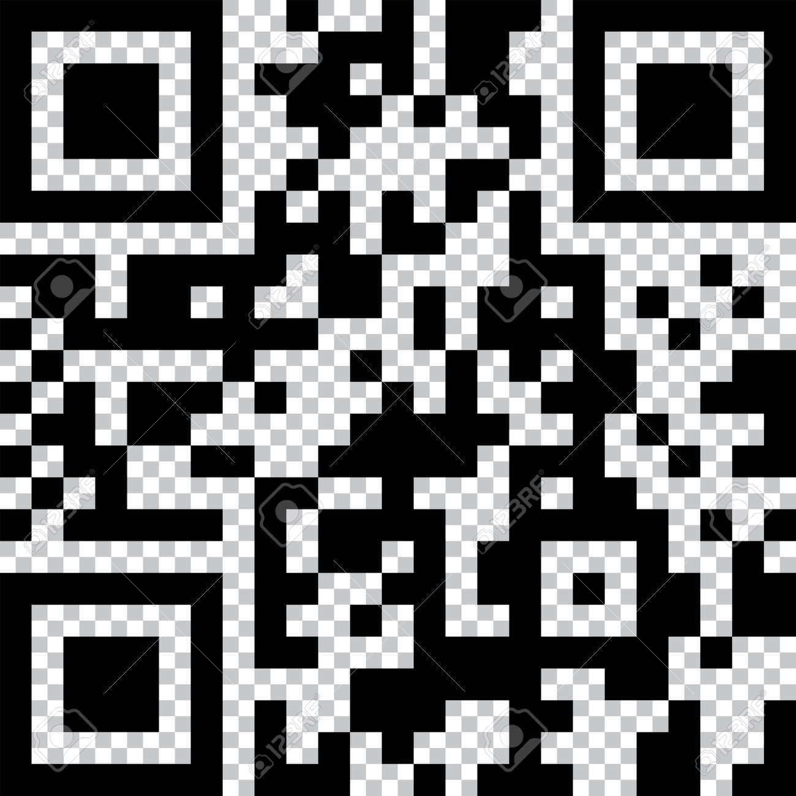

Soy el Capitán Elara Voss, exploradora de la Sociedad Geográfica Continental. El 14 de marzo de 1923 recibí un diario manuscrito con coordenadas que nadie había osado seguir. Esta página documenta cada paso de nuestra travesía hacia lo desconocido.

Cruzamos el umbral al amanecer. Los árboles de sequía se alzaban como catedrales vivientes, y el viento producía un zumbido extraño entre las copas. Encontramos marcas de hachas en un tronco caído; alguien había estado aquí antes que nosotros. Las marcas databan de 1842 según nuestro historiador.

Al mediodía llegamos al abismo. Un puente de piedra natural, erosionado por siglos de tormentas, cruzaba el vacío. El dilema era terrible: ¿cruzar o buscar otro camino? Perderíamos dos días si retrocedíamos. Decidimos avanzar uno a uno, sin mirar hacia abajo. El crujido de la piedra bajo nuestros pies aún resuena en mis pesadillas.

Al atardecer del tercer día, encontramos la boca de la cueva. El aire olía a sal y a tiempo detenido. Dentro, en la cámara principal, descubrimos lo que el diario describía: un altar con símbolos que no correspondían a ninguna civilización conocida. Tomamos fotografías, dejamos todo intacto, y sellamos las coordenadas en tres sobres separados.

Escanea el código para validar las coordenadas oficiales de la Sociedad Geográfica.
- Documento Finalizado el 21 de abril de 1923. Clasificación: PENDIENTE DE REVISIÓN.